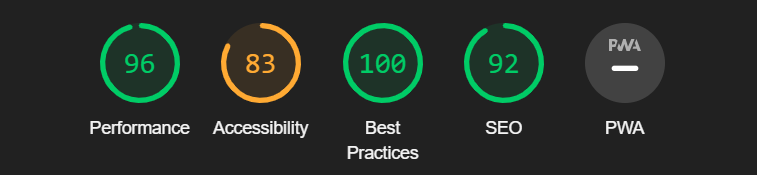
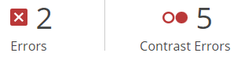
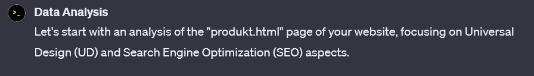

Analyse
Lighthouse
Performance
Under Performance var det to hoved ting den klaget på:
1. Image elements do not have explicit width and height
2. Serve static assets with an efficient cache policy
Dette kommer av at jeg bruker bilder med % width for
interaktivitet. Jeg har høy score på Performance så det
er kanskje ikke veldig viktig å fikse hvis det blir vanskelig.
Accessibility
Accessibility var det jeg fikk værst score på. Igjen var det to faktorer:
1. Background and foreground colors do not have a sufficient contrast ratio.
2. Links do not have a discernible name
Dette kommer av at jeg ikke ville ha tekst i headeren. Dette kan
fikses bra, men må kanskje endre designkonseptet litt.
Best Practices
Jeg fikk en score av 100 på Best Practices. Det var ingen klager.
SEO
SEO delen klaget på at jeg ikke hadde meta description noe
som er forventet, ettersom at jeg ikke har kommet dit enda.
Konklusjon
Totalt sett er min score ganske bra. Det eneste under 90 var
Accessibility. Der var det for det meste klage på dårlig kontrast,
noe som ikke burde være for vanskelig å fikse. Jeg er ganske
fornøyd med resultatene.
Webaim
Webaim ga klager innen to kategorier: Error, og kontrast error
Empty label
Den første error klagen er om at min form (input) ikke har et label.
Dette er en relativt lett fiks, der jeg bare trenger å legge til et label.
Empty link
Den andre klagen var at jeg hadde en tom link i headeren (handlekurven).
Dette er også en lett fiks, men det kan ødelegge litt utseende til headeren
Dårlig kontrast
Mye likt som lighthouse, webaim klagde også på at det var dårlig
kontrast mellom bakgrunn og forgrunn. Den ga flere eksempler hvor
hvit tekst på blå bakgrunn var dårlig.
Konklusjon
Webaim ga veldig mye tilbakemeldig lik lighthouse. Det meste
var klaging på manglede label og dårlig kontrast, noe som også
ble påpekt av lighthouse. Dermed var webaim fortsatt nyttig, fordi
den hadde et bra UI som viste lett og tydelig hva og hvor
problemet var.
ChatGPT
Jeg spurte ChatGPT om å analysere min nettside med tanke på UU (UD på engelsk) og SEO.
ChatGPT returnerte en liste med punkter man burde passe på:
- Accessibility
- Semantic HTML
- Responsive Design
- Meta Tags and Title
- Headings and Content
- Internal Linking
- URL structure
- Image Optimization
- Loading Speed and Scripts
- Mobile Optimization